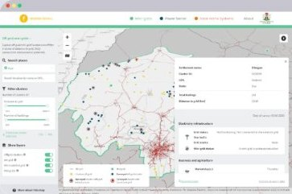

Methods, walkthroughs and field notes
News and stories from the team behind the Nigeria SE4ALL data — how we collect it, how to use the webmaps, and what we learn in the field.

The Nigeria SE4ALL off-grid settlements survey
This blog post introduces the methodology behind the off-grid settlements survey to collect information about large energy consumers.
Emmanuel Jolaiya · Read the post
Innovative geospatial data collection on electrical infrastructure with mobile mapping technology
Introducing the geospatial data collection methodology based on vehicle-mounted mobile mapping technology using the Trimble MX7 device.
Philip Ifeanyi Egboka
Power sector analytics explorer
A detailed walkthrough of the Power sector analytics webmap by Nigeria SE4ALL.
Emmanuel Jolaiya
Exploring mini-grid potential and selecting potential sites for off-grid mini-grids in Nigeria
A detailed walkthrough of the Off-grid mini-grid explorer webmap on the Nigeria SE4ALL platform.
Emmanuel Jolaiya
Nigeria SE4ALL Mapathon: mapping for improved access to electricity
The Nigeria SE4ALL Mapathon is a series of map hackathons where students learn to digitise buildings and other assets and contribute to the open data community.
Omowonuola Akintola
Exploring the potential for interconnected mini-grids with the Nigeria SE4ALL web map
A detailed walkthrough of the Interconnected mini-grid explorer web map by Nigeria Sustainable Energy for All (SE4ALL).
Frankie Eckersley-Carr
Assessing solar home system potential through access to marketplaces with the Nigeria SE4ALL web map
A detailed walkthrough of the solar home system explorer webmap by Nigeria Sustainable Energy for All (SE4ALL).
Frankie Eckersley-Carr
Training available on the Central Data Management System (CDMS) of the Nigeria SE4ALL platform
Explore the training curriculum we developed for the Federal Ministry of Power in 2021 on the SE4ALL online platform.
Philip Ifeanyi Egboka
GIS for the rest of us
Designed to get new users, whatever their background, up and running quickly. It takes you step by step through the fundamentals you need to get started with GIS.
Emmanuel Jolaiya
Introducing the Nigeria SE4ALL platform V2
FMP and NESP worked extensively over the last year to develop a user-centric ecosystem. The new platform will greatly assist interested parties in improving analysis and decision-making.
Emmanuel JolaiyaBuild your skills on the Learning Platform
Capacity building and courses on the Nigeria SE4ALL Learning Management Platform — free, self-paced, with a certificate when you finish.